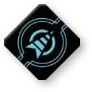

CLOAK ()

Cloak Token
Ships can cloak to become difficult to hit, and they can decloak to move unpredictably. When a ship performs the action, it gains one cloak token.
A ship is cloaked while it has a cloak token. Cloak tokens are blue tokens. A cloaked ship has the following effects:
-
Its agility value is increased by 2.
-
It is disarmed.
-
It cannot perform the cloak action or gain a second cloak token.
During the System Phase, each cloaked ship may spend its cloak token to decloak. When a small ship decloaks, it must choose one of the following effects:
-
Barrel roll using the [2 ] template.
-
Boost using the [2 ] template.
When a medium or large ship decloaks, it must choose one of the following effects:
-
Barrel roll using the [1 ] template.
-
Boost using the [1 ] template.
-
Decloaking does not count as executing a maneuver or performing an action but does count as a move.
-
A ship can decloak even while stressed.
-
When a player declares to decloak a ship, that player must declare which type of boost or barrel roll it is going to perform before placing a template on the play area.
-
If a decloak fails, the ship is returned to its prior position before it attempted the decloak and the cloak token is not removed.
-
Each ship cannot drop or launch a device during the same phase that it decloaked.